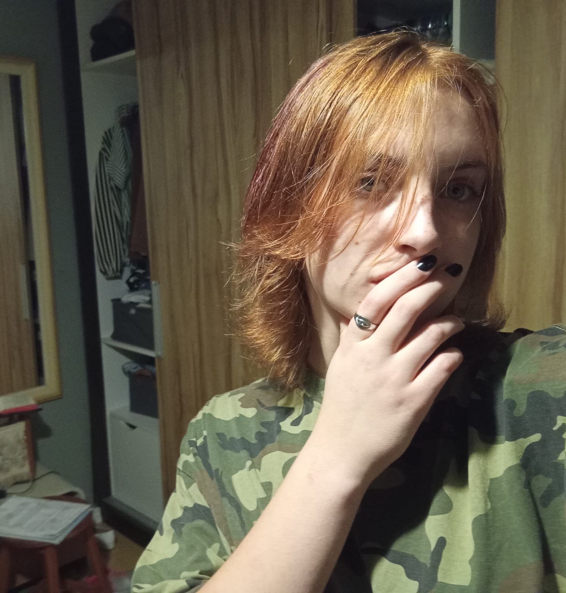

ALUNOS

Mônica Christo
Bio
1 6 anos 2ª - Alberto de Carvalho Não busco trabalho, pois estou focando nos estudos para alcançar a futura profissão desejada. Aprendo rápido, tenho um conhecimento razoavelmente bom, sou amigável e educada, mas trabalho melhor sozinha. E por contrapartida, sou desastrada e demoro para responder às vezes, devido ao raciocínio mais lento (tenho TDAH), então preciso que as pessoas tenham um pouco mais de paciência comigo. Sou estudiosa e gosto de malhar. Além disso gosto de caçar cogumelos, ler, descobrir músicas novas, desenhar, boxe e muito mais.